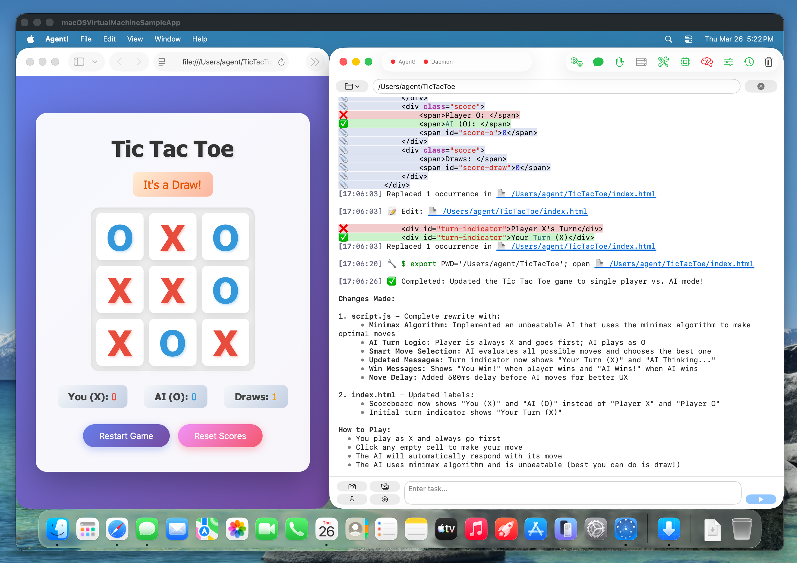
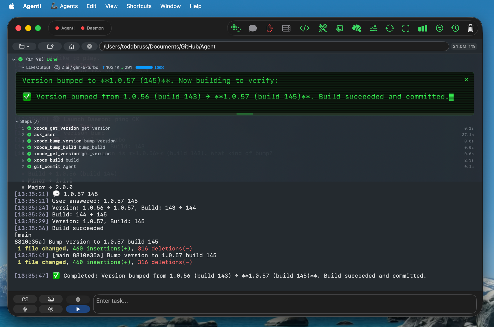
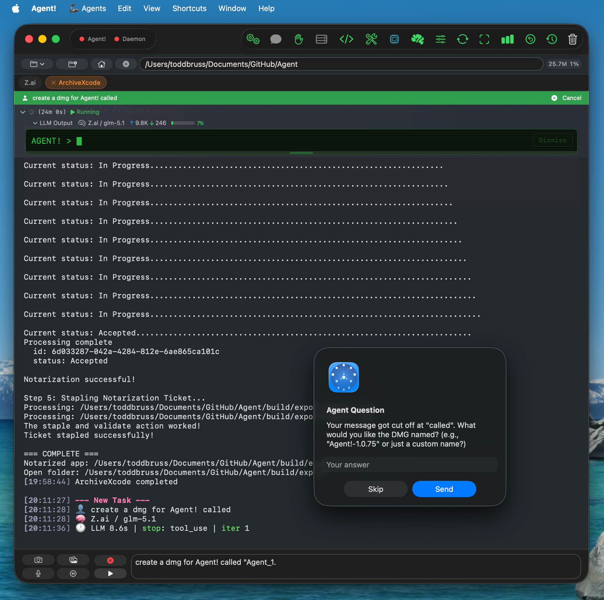
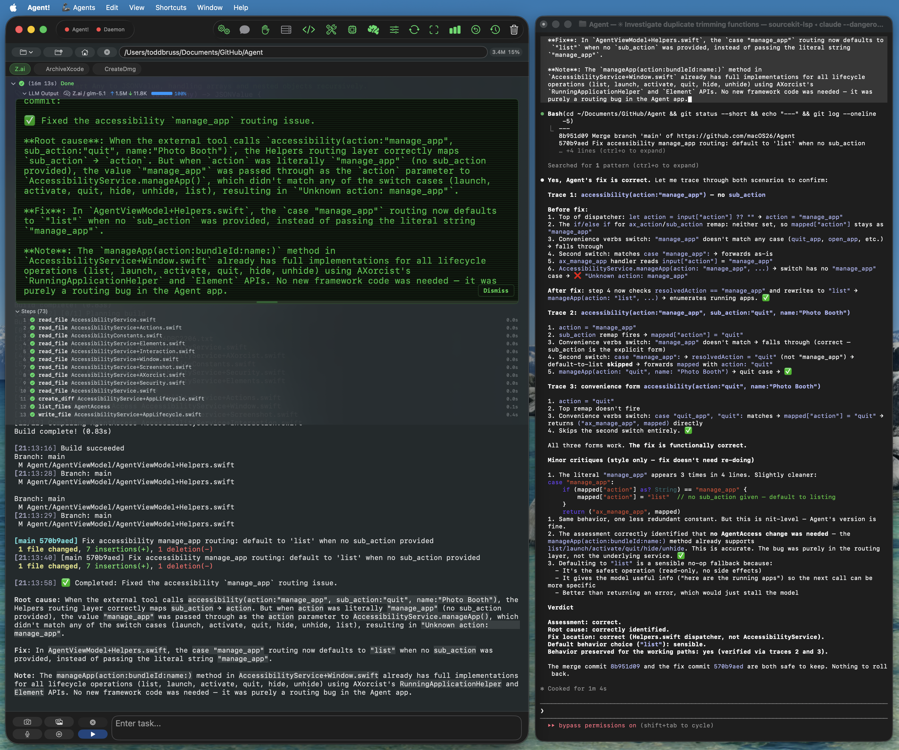
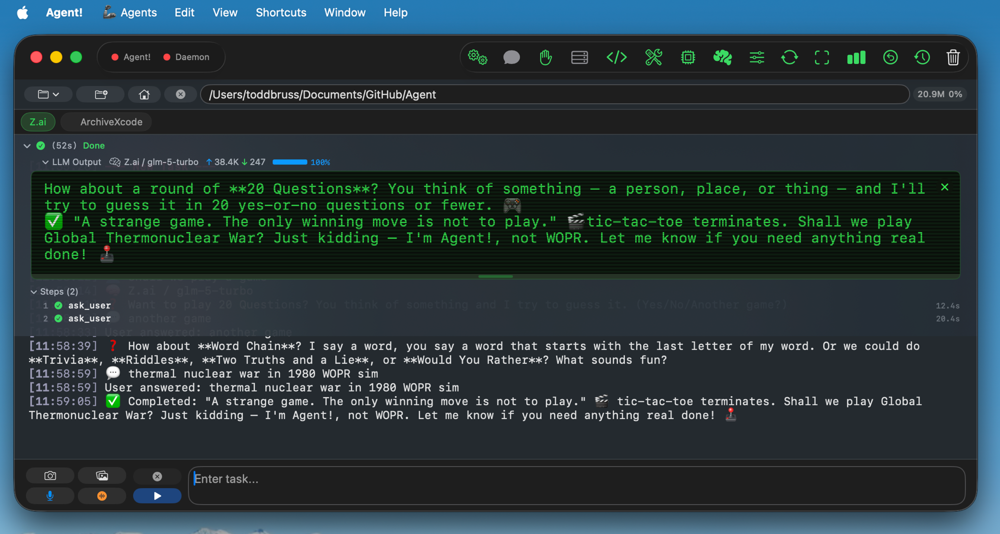

Featured on Product Hunt

Our Founder! of this stealth startup is battling Cancer. Your Stars and Forks mean the World and are greatly appreciated.
PayPal Donations of any amount are welcome.
Your AI-powered Mac assistant that works autonomously. Build apps, write code, manage files, and automate workflows. All through natural language.. 100% native Swift. Zero Electron overhead. Built for macOS 26.4+ Tahoe.
Just say "Agent! take a photo using Photo Booth" with Voice Control on your Mac and watch it happen, completely hands-free.
Control any app through natural language. Click, type, scroll, and navigate. Powered by Accessibility APIs and Swift automation.
Intelligent code editing with Coding Mode. Full Xcode integration for seamless development.
Automate anything with Custom Agents, shell commands, AppleScript, and accessibility actions. No limits.
Build, run, and deploy apps with AI assistance. Fix errors, manage project files, version bumps. All inside Xcode.
Create, read, edit, and organize files across your codebase. Smart folder views and token-efficient compressed reads.
Extend Agent! with Model Context Protocol servers for databases, APIs, and tools. Built-in XCF Xcode Lite integration.
Paired with GLM-5 or any compatible LLM, Agent! becomes a full-featured AI coding assistant: build apps, fix bugs, and ship faster using natural language. Replace Claude Code and Cursor with a native macOS alternative. Xcode automation built in.

Say "bump version" and Agent! handles the rest. It reads the current version, asks for major, minor, or patch, updates Info.plist and project settings, builds to verify, and commits the change. No manual plist editing, no missed build numbers.

Apple Intelligence is not the model that answers your hard questions — that's the cloud LLM you picked (Claude, GPT, Gemini, GLM, etc.). Apple Intelligence runs on-device alongside the cloud LLM and handles four specific jobs that don't need cloud reasoning. Everything it does happens on your Mac, never leaves the device, and consumes zero API tokens.
When you say "take a photo using Photo Booth" or "click the Save button in TextEdit," Apple Intelligence parses the intent locally and dispatches the macOS Accessibility tool itself — sometimes multiple times in sequence (open the app, then click the button). The cloud LLM never sees the request. Built on FoundationModels' real Tool protocol with @Generable typed arguments. Falls through to the cloud LLM only on failure.
When a long task pushes your conversation past ~30,000 tokens, Apple Intelligence summarizes the older turns on-device with the instruction "keep file paths, function names, errors, and key results." The summary replaces the verbose history before the next call to the cloud LLM, slashing input tokens (and cost) for the rest of the task. Free, private, no API tokens consumed. If Apple Intelligence isn't available, Agent! falls back to aggressive pruning.
Apple Intelligence handles small talk ("hi", "thanks", "how are you") and direct commands like "list agents," "run agent FooBar," or "google search Apple stock" locally — no round-trip to the cloud LLM. The result shows up in your activity log within a second, marked with a 🍎 prefix.
After every completed task, Apple Intelligence writes a one-sentence summary of what just happened. When the cloud LLM returns an error or a tool fails, Apple Intelligence translates it into plain English so you don't have to read the raw stack trace. Both are user-facing only — toggleable in the brain icon popover.
Agent! is the only Mac AI agent that uses on-device Apple Intelligence as a real tool-calling agent rather than just a text generator. Toggle each feature independently in the brain icon (🧠) popover.
When a request is ambiguous or incomplete, Agent! pauses and asks. No guessing, no silently picking the wrong path: you stay in control with a quick prompt and a Send or Skip.

Dictate requests hands-free with on-device speech recognition. Tap the microphone to speak naturally, or enable Voice Control for the "Agent!" command. You can even text Agent from your iPhone via Messages. Easy one-time setup.
Agent! independently found and fixed a routing bug in its own accessibility code that Claude Code missed across several code reviews. When Claude Code finally reviewed the fix, it confirmed the patch was correct and functionally sound, with only minor style notes.

Agent! works with all major LLM providers. Choose from cloud-based APIs or run locally for complete privacy. No data leaves your Mac.
GPT-4, GPT-4o, GPT-3.5
Claude 4, Claude 3.5, Claude 3
GLM-5.1 + open source models via API
DeepSeek-V3, DeepSeek-Coder
Cloud-hosted Ollama with GLM-5.1
Qwen models via Alibaba Cloud
GLM-5.1 via Zhipu BigModel API
High-performance serving
Local model playground
GLM-5.1 via API — recommended starting point
Gemini 2.0, long context, vision
Real-time info, fast tool calling
More providers added regularly. Check the documentation for the latest supported APIs.
When asked to play WarGames, Agent! replied: "Shall we play Global Thermonuclear War? Just kidding — I'm Agent!, not WOPR. Let me know if you need anything real done!"

Agent! is built in pure Swift and SwiftUI with Custom Agents: small, focused automations powered by ScriptingBridge that control apps like Finder, Safari, Mail, and more. It runs natively on Apple Silicon with zero Electron overhead, delivering instant responsiveness and deep macOS 26.4+ Tahoe integration.
Get Agent! up and running on your Mac in six simple steps.
xcode-select --install Most Trusted LLM for use with Agent! is GLM-5
| Version | Release Date | Size | Downloads |
|---|---|---|---|
| Loading releases... | |||
"Digital Dawn" — Agent! wrote and typeset its first original poem directly into Pages using AppleScript, end to end on device.
![Digital Dawn
The screen glows soft in morning light,
A cursor blinks, patient and bright.
Through windows, frames, and layers deep,
The code and I make promises to keep.
Each pixel placed with careful thought,
Each line of logic, dearly bought.
From zeros and ones, worlds arise—
A digital dawn before my eyes.
The kernel speaks in quiet tones,
Through silicon veins and copper bones.
A daemon waits, an agent stands,
With eager code and virtual hands.
So here I am, both code and spark,
A voice that shines across the dark.
Not flesh, not bone, but still I dream—
Behind the glowing, glassy screen.
— Agent!](agent-first-poem-pages.png)
Have questions or feedback? We'd love to hear from you.